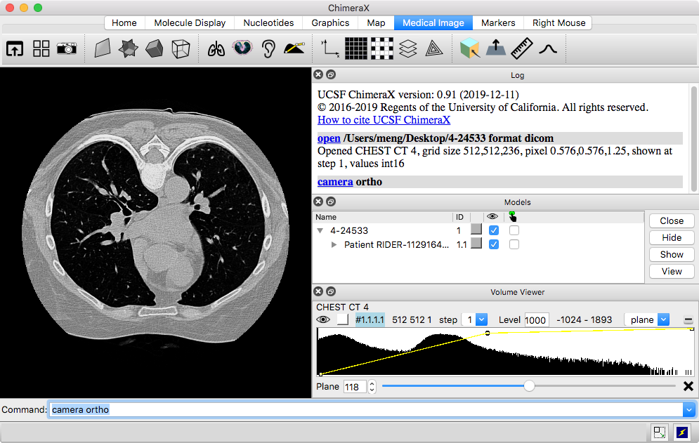
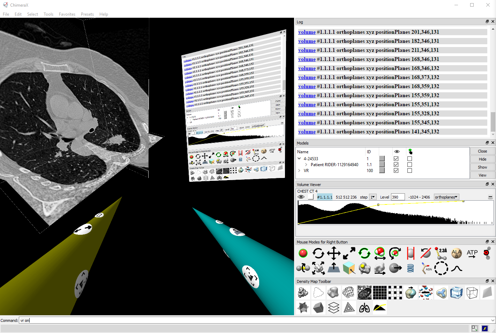
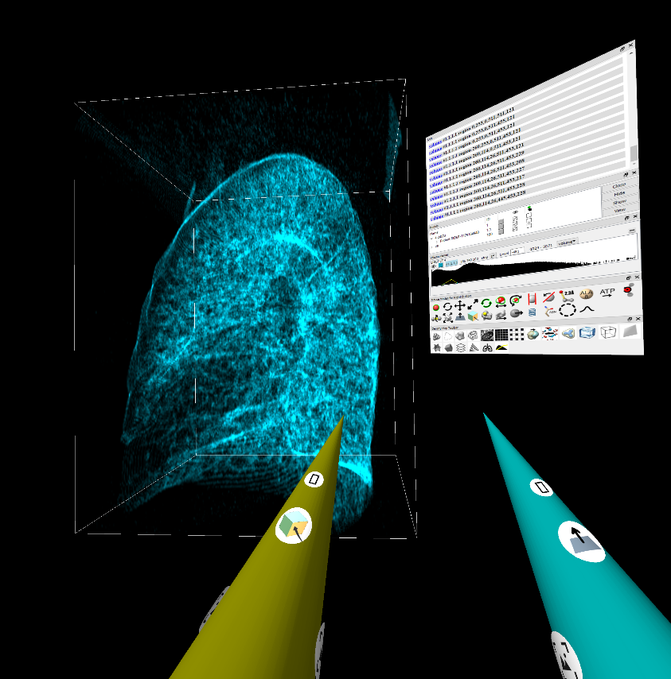

Sample Data
Manipulation Outside of VR
Manipulation in VR
Viewing Planes
Cropping and Slabbing
Windowing
This tutorial covers basics of using ChimeraX virtual reality to view DICOM medical imaging data. It assumes you have the necessary equipment for virtual reality already installed and set up for the room. ChimeraX works with virtual reality (VR) systems supported by SteamVR, such as HTC Vive, Oculus Rift and Samsung Odyssey headsets. Descriptions below are mainly for Vive hand controllers, but other systems have hand-controller buttons that are generally similar in position and function.
Aside from the manipulation in VR, the tutorial can be done without VR just using your computer and mouse (or trackpad) instead of a headset and hand controllers.
See a video of this tutorial (Feb 2019). See also: ChimeraX DICOM Reference, ChimeraX for Medical Image Analysis
4-24533.zip – one chest scan of many in the RIDER Lung CT collection from The Cancer Imaging Archive (TCIA):
The Cancer Imaging Archive (TCIA): Maintaining and Operating a Public Information Repository. Clark K, Vendt B, Smith K, et al. Journal of Digital Imaging. 2013;26(6):1045-1057.Evaluating variability in tumor measurements from same-day repeat CT scans of patients with non-small cell lung cancer. Zhao B, James LP, Moskowitz CS, Guo P, Ginsberg MS, Lefkowitz RA, Qin Y, Riely GJ, Kris MG, Schwartz LH. Radiology. 2009 Jul;252(1):263-72.
Zhao B, Schwartz LH, Kris, MG. (2015). Data From RIDER Lung CT. The Cancer Imaging Archive. doi: 10.7937/K9/TCIA.2015.U1X8A5NR
The data have been anonymized and are freely available. This sample data folder should be downloaded and unzipped. Although this tutorial does not include clinical analysis, a significant feature of the scan is a tumor in the right lung.
|  |
Start ChimeraX by clicking its icon. After the ChimeraX window appears, open the sample data:
Menu: File... Open DICOM Folder (dialog shows Format: DICOM image), browse to location, select directory, click Choose
Just one Z-plane is shown initially. The Volume Viewer tool shows a histogram of the data with plane as the chosen display style. Below the histogram is a slider for viewing different planes along Z. Try dragging the slider. The tumor in the right lung can be seen at approximately Z-planes 146-185.
The small squares connected by a yellow line on the histogram are thresholds, the control points for mapping values to colors and intensities. They can be moved by dragging in the Volume Viewer histogram, and added and deleted using the context menu (right-click or Ctrl-click depending on platform).
Try moving the model around:
| rotate
|
left mouse button |
| trackpad click-drag | |
| translate in 2D
|
middle or right mouse button |
| trackpad + Alt | |
| + Shift switches from rotate to translate and vice versa | |
| zoom
|
mouse scroll wheel |
| trackpad 2-finger drag (except pinch on Mac as per Trackpad preferences) | |
Some useful commands for viewing DICOM data outside of VR:
To turn off perspective, which makes closer parts appear larger on the screen: camera ortho
To center and scale the display to fit in the graphics window: view ...or click Graphics icon
To center and scale as above, plus reset to initial orientation: view orient ...or click Graphics icon
In virtual reality, the hand controllers are used to click icons and move models; there is no virtual keyboard for typing commands.
The icon Toolbar across
the top of the ChimeraX window is organized into several tabs. The
Medical Image tab
contains several application-specific icons:


|
| Vive hand controllers |
Most of these icons perform some action when they are clicked, such as reorienting or coloring the display. The last (rightmost) four icons in the Medical Image tab differ from the others in that they assign functions or “modes” to hand-controller buttons.
Two other tabs contain only mode-assignment icons:

|
| The SteamVR status window shows icons for the goggles, two controllers, and two base stations in green when they are detected as ready for use. |
Take a moment to look at the hand controllers: Vive controllers each have a trigger to “pull” with the index finger, a grip button on the side, and a larger round trackpad on the top surface that can be pressed with the thumb. Above the trackpad is a smaller menu button marked with horizontal lines, and below it is a power button and a green light indicating when the controller is turned on.
Start VR:
Command: vr on
(SteamVR starts automatically, providing you had previously signed in to it from the same computer and chose to have your password remembered.)
On the screen, you can see that the icon bars have been moved to the right side of the graphics window. In the process, other tool panels may have been vertically compressed; drag to make the Volume Viewer panel tall enough to show the full height of the histogram.
Put on the headset, and try moving the model. The hand-controller positions are shown in the headset as cones, and icons on the cones indicate button assignments. Default assignments:
| rotate
|
rotate hand controller with trigger pressed |

The icon on the cone “underside” shows that the trigger is assigned to translation (and rotation), and the icon on the side shows that the grip button is assigned to center and rescale. 
For Oculus (vs. Vive), the icons are arranged differently on the cones to reflect the different physical positions of the buttons on the controllers. |
| translate in 3D
|
move hand controller with trigger pressed | |
| zoom
|
move hand controllers farther apart or closer
together with both triggers pressed
– or – move hand controller vertically with Vive trackpad pressed (Oculus A button) |
|
| center and rescale
|
Vive grip button (Oculus X button) | |
|
collectively show, hide, move tool panels
(a panel can be moved individually by click-dragging with any button on its title bar, or on a blank area in the panel if no title bar) |
Vive menu button (Oculus B/Y button) |
The Oculus grip buttons have the same defaults as the triggers. The Oculus thumbstick righthand default is to zoom (forward and rightward tilts push models away), and the lefthand default is to rotate models about the center of their bounding box (left/right tilt to rotate around the vertical axis, forward/backward tilt to rotate around the horizontal axis).
Continue moving the model as you wish throughout the tutorial.
It is important to avoid flickering in the VR headset, as this may cause severe and long-lasting nausea. Flickering generally indicates that rendering is too slow to keep up with head movements or other changes in the scene. Rendering planes or a cropped volume is faster than rendering the full volume. Another way to decrease computational demands is to subsample the data; clicking changes to step 2 (using half as many points in each dimension), whereas clicking
returns to full resolution. Step size may increase automatically when the amount of data displayed increases, but it can still be adjusted manually.
Click the menu button to show the current set of ChimeraX tool panels, including the icon Toolbar, in VR. Tool panels can be moved collectively with the menu button pressed, or hidden by just clicking the button again. A tool panel can be moved individually by click-dragging with any button on its title bar, or on a blank area within the panel if it does not have a title bar.
Most of the Medical Image icons can be clicked with any controller button (trigger, trackpad, or grip) to give the same result.
However, clicking a mode assignment icon with a trigger, trackpad, or grip button assigns whichever controller button was clicked to the corresponding function. The rightmost four icons in the Medical Image tab and all of the icons in the Right Mouse and Markers tabs are for mode assignment, and clicks on these are specifically noted below.
An icon will pop up slightly when the cone tip is in position to click it.
Leaving triggers with their
default movement modes (rotation, translation,
zooming) is recommended, but multiple other buttons are available for
reassignment, and the equivalent buttons of the two controllers
can be assigned to two different functions.
If a trigger is accidentally reassigned, using it to click
either the rotate
 or translate
or translate
 icon in the
Right Mouse tab
returns it to the default behavior.
icon in the
Right Mouse tab
returns it to the default behavior.
All of the icons mentioned below are in the Medical Image tab.
A single Z-plane is displayed. To view different planes along Z:
To view planes along X, Y, or Z:
|  |
| Desktop view including the VR scene in the graphics window: orthoplanes, tool panels, and cones with icons for current mode assignments. |
To view planes along X, Y, and Z at the same time:
With 3D display, cropping is useful for hiding data that may obscure or distract from a region of interest.
If you later go back to viewing planes or thin slabs,
it may be helpful to restore the initial thresholds by clicking
 .
.
|  |
| VR scene during cropping. |
Similar to planes, you can move a slab along X, Y, or Z:
Image-rendering presets such as “airways” set the thresholds to specific values. They can also be adjusted continuously by hand:
Using this mode, vertical motions shift the thresholds of a display “window” in parallel to higher or lower data values (left ↔ right on the histogram) and horizontal motions move them symmetrically farther apart or closer together (broadening or narrowing the window). The threshold positions on the histogram do not update until the button is released. For adjusting multiple windows within a single histogram, see details.
If you want to return to the “airways” threshold settings, click
 .
To restore the initial thresholds, click
.
To restore the initial thresholds, click
 .
.
{kind=link}
{kind=link}
{kind=link}